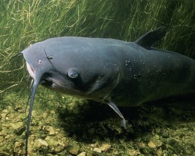

Portal dla wędkarzy
Ryby zamieszkujące rzeki
Sczupak pływa w rzece Warta-Obrzycko. Wielkopolskie
Leszcz pływa w rzece Przemsza k. Okradzinowa. Slaskie
Ryby drapieżne naszych wód
L.p.
Gatunek
Wystepowanie
1
Sczupak
stawy, rzeki
3
Sandacz
stawy, jeziora, rzeki
4
Okom
rzeki
5
Sum
jeziora, rzeki
6
Dorsz
morza, oceany

Pobierz kwerendy
Stronę wykonała:Karpenko Viktoriia